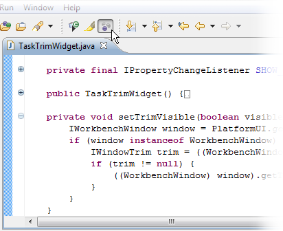
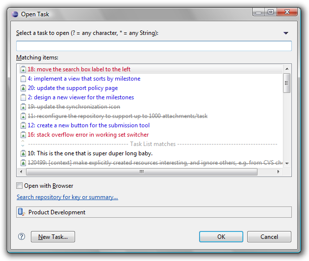
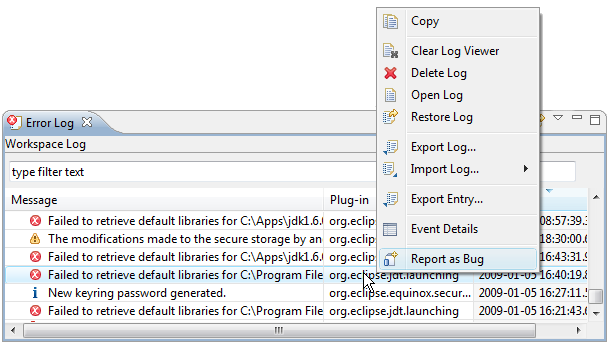

| Task-Focused Interface | ||
|---|---|---|
|
|
|
|
| Task Editor | Team Support | |
The task-focused interface is oriented around tasks and offers several ways to focus the interface on only what is relevant for the currently active task.
You can focus navigator views (e.g. Package Explorer, Project Explorer, Navigator) by toggling the "Focus on Active Task" button in the toolbar. When focused, the view will show only the resources that are "interesting" for the currently active task.

To navigate to a new resource that is not a part of the active task's context, you can toggle "Focus on Active Task" off, browse to the resource, and then click "Focus on Active Task" again to see only relevant resources. A more efficient way to add new resources is to use Alt+Click navigation (Clicking the mouse while holding the Alt key).
When a view is in Focused mode, you can Alt+Click a node to temporarily show all of its children.
Some editors such as the Java editor support focusing. Clicking the Focus button in the toolbar will fold all declarations that are not part of the active task context.

When a task is active, elements that are interesting are displayed more prominently. For example, when you open the Java Open Type dialog (Ctrl+Shift+T), types that are interesting for the active task are shown first. Similarly, when you use ctrl+space to autocomplete a method name in a Java source file, methods that are in the task context are displayed at the top.
When Focus is applied to a navigator view, the working sets filter for that navigator view will be disabled. This ensures that you see all interesting elements when working on a task that spans working sets. To enforce visibility of only elements within one working set, do the following:
An
Open Type style dialog is available for opening tasks (Ctrl+F12) and for activating tasks (Ctrl+F9). The list is initially populated by recently active tasks. The active task can also be deactivated via Ctrl+Shift+F9. This can be used as a keyboard-only alternative for multi-tasking without the
Task List view visible. These actions appear in the
Navigate menu.

In the task editor, comments that include text of the form bug#123 or task#123 or bug 123 will be hyperlinked. Ctrl+clicking on this text will open the task or bug in the rich task editor.
To support hyperlinks within other text editors such as code or .txt files, the project that contains the file must be associated with a particular task repository. This is configured by right-clicking on the project and navigating to "Properties" > "Task Repository" and selecting the task repository used when working with this project.
Bugs can created directly from events in the Error Log view. This will create a new repository task editor with the summary and description populated with the error event's details. If the Connector you are using does not have a rich editor, the event details will be placed into the clipboard so that you can paste them into the web-based editor that will be opened automatically.

|
|

|
|
| Task Editor | Team Support |